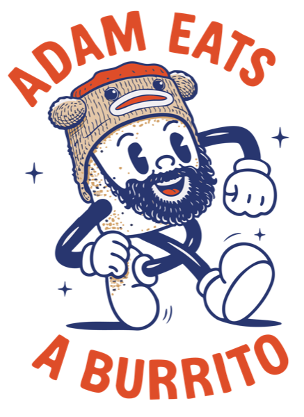

queso you’re great
A little extra cheese. A lot of good vibes.
Queso You're Great is a little passion project born from my love of playful branding, fun design, and, obviously, chips and queso.
A place to experiment with illustration, typography, color, and all the weird and wonderful ways one little phrase can come to life.
No big strategy. No serious rules. Just an excuse to make fun things, explore new ideas, and put a little more positivity into the world.
And in case no one's told you today

This little project pairs perfectly with Adam Eats a Burrito, another food brand I designed where my husband eats burritos.